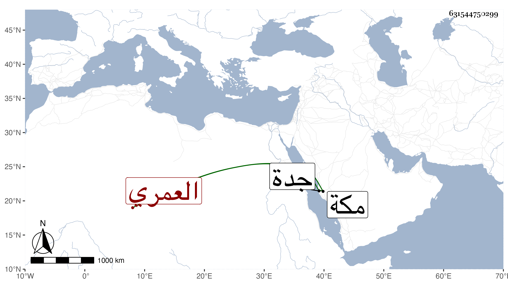

0902Sakhawi.DawLamic.ITO20230111-ara1.EIS1600.631544750299
Biography ID: 631544750299
62
أحمد بن علي بن سنان بن راجح بن محمد بن عبد الله بن عمر بن مسعود العمري أحد قواد مكة . مات في مقتلة أشرت إليها في الحوادث في صفر سنة ست وأربعين وطيف برأسه بجدة ثم دفن من يومه ، وكان من أعيان القواد المنفردين بمزيد التمول والعقار والأموال ويضارب ويقارض وله سبيل بطريق المعلاة بالقرب من مسجد الراية وقف عليه الدار المتصلة به .
